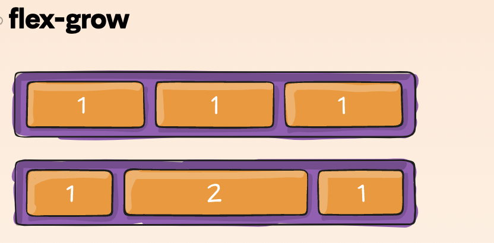
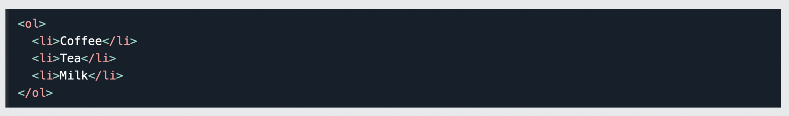

Flex Box
Es un modelo que permite distribuir y alinear elementos dentro de un contenedor, este ha estado en el mundo del diseño de sitios web desde el 2009 lo que le ha permitido convertirse en una gran herramienta puesto que permite hacer mejor provecho del espacio dentro del sitio web mediante medidas dinámicas.
Cundo usar Flexbox
- Re ordenamiento de elementos dentro de un contenedor, simepre y cuando haya visto que no puede ser realizado mediante CSS
- Escalamiento y alineamiento horizontal y vertical
Cundo no usar Flexbox
- No usar para Page Layout, en su lugar puede utilizar sistemas grid con porcentajes, medias grid y demas
- No usar display:flex sobre cada contenedor "div", en su lugar verifique si se puede solucionar de una manera mas simple con CSS
- No usar si tu sitio web tiene mucho trafico proveniente de IE8 y IE9
Coyier, C. (2022, April 29). A Complete Guide to Flexbox. CSS-Tricks. Retrieved July 1, 2022, from https://css-tricks.com/snippets/css/a-guide-to-flexbox/
Listas "< ul >"
Puesto que el diseño de sitios web consiste en organizar y presentar la información de manera amigable al usuario se hace entonces necesario contar con elementos que permiten hacerlo, para ello fueron introducidas las listas, las cuales segun el tipo permiten presentar un conjunto de elementos de manera ordenada, desordenada o como unas lista de definición.
HTML Lists. (n.d.). W3schools.Com. Retrieved July 2, 2022, from https://www.w3schools.com/html/html_lists.asp
Enlaces "< a >"
Es una conexión de un recurso web con otro, lo que en otras palabras significa una manera de unir tu sitio web con otros recursos que no hacen parte de tu código. Dichos recursos pueden ser de diferentes tipos tales como: videos, imagenes, otras paginas web.
Explicación de sintaxis
- href: este atributo permite definir la dirección en la cual se encuentra el recurso
- target: permite establecer la manera en que este recurso deberia ser abierto
Enlaces HTML. (2021, November 12). Manual Web. Retrieved July 2, 2022, from https://www.manualweb.net/html/enlaces-html/